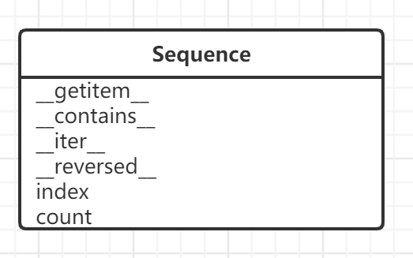
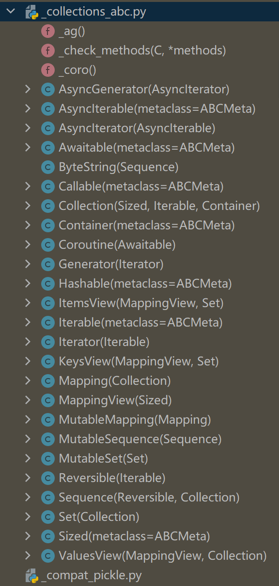

本书作者：测试开发刚哥，文章版权归个人所有，未经授权请勿转载。
Python接口与协议
Python语言是没有interface关键字的，这也是动态类型语言的特点之一。Python的接口指的是类实现或继承的公开属性，包括数据或方法。比如Sequence的正式接口如下图所示：

这些都叫做Python接口。事实上，Python每个类都有接口，除了抽象基类。
接口是正式的，它定义了类具有哪些属性，协议是非正式的接口，只由文档和约定定义。比如只要类实现了__getitem__方法，按照序列协议的约定，Python就会支持这个类完成访问元素、迭代和使用in运算符等一系列操作。
猴子补丁
我们可以通过猴子补丁来进一步认识，Python中协议的约定是怎么回事。猴子补丁是这样一种技术：在运行时修改类或模块，而不改动源码。还是以序列协议来举例，比如：
>>> from random import shuffle
>>> from frenchdeck import FrenchDeck
>>> deck = FrenchDeck()
>>> shuffle(deck)
假设运行报错了：TypeError: 'FrenchDeck' object does not support item assignment，因为FrenchDeck类只有__getitem__方法，只实现了不可变的序列协议。为了解决这个报错，需要通过__setitem__方法实现可变的序列协议。
代码如下：
def set_card(deck, position, card):
deck._cards[position] = card
FrenchDeck.__setitem__ = set_card
shuffle(deck)
这就是一段猴子补丁技术的实现代码，没有修改FrenchDeck类的源码，而是在运行时动态修改。
抽象基类
Python的抽象基类是指必须让继承它的子类去实现它所要求的方法的类。Python的collections.abc模块中就定义了很多抽象基类：

虽然我们在实际编程中并不会自己编写抽象基类（一般也不建议这样做，因为可能会导致意想不到的问题），但是了解抽象基类，可以帮助我们更好理解Python面向对象的继承等概念。
抛开枯燥的理论知识，我在书中找到了一处具有实践价值的片段：
「在一连串if/elif/elif中使用isinstance做检查，然后根据对象的类型执行不同的操作，通常是不好的做法；此时应该使用多态，即采用一定的方式定义类，让解释器把调用分派给正确的方法，而不使用if/elif/elif块硬编码分派逻辑。」
交流群和公司都有人问过我这个问题，写了太多的ifelse有没有更好的实现方式，我想这里已经给出了答案。
鸭子类型和白鹅类型
Python鸭子类型是指对象的类型无关紧要，只要实现了特定的协议即可。它的好处是避免过多的isinstance，如果遵守既定协议，能增加利用现有的标准库和第三方代码的可能性。示例：
class Animal(object):
def run(self):
print("The animal is running...")
class Dog(Animal):
def run(self):
print('The dog is running...')
class Cat(Animal):
def run(self):
print('The cat is running...')
def make_run(animal):
animal.run()
dog = Dog()
cat = Cat()
make_run(dog)
make_run(cat)
对于 make_run() 函数来说，传入的参数并不一定需要是 Animal 类型的，只需要保证传入的对象有一个 run() 方法即可。
白鹅类型是指只要cls是抽象基类（即cls的元类是abc.ABCMeta），就可以使用isinstance(obj, cls)。它的基本特性是，即便不继承，也有办法把一个类注册为抽象基类的虚拟子类。Python不会检查虚拟子类是否实现了抽象基类要求实现的方法，而是由我们自己保证，并捕获异常。具体会在下篇文章《Python抽象基类的定义与使用》进行介绍。
参考资料：
《流畅的Python》第11章 接口：从协议到抽象基类